2D CNC
Large format cnc machining can be used to quickly machine large objects from sheets of plywood.
- Competency test
- CAD design
- CNC milling not done
Competency test
In this competency test, a coaster is programmed and machined.
The CNC machine: This is the EAS Versatil CNC mill.
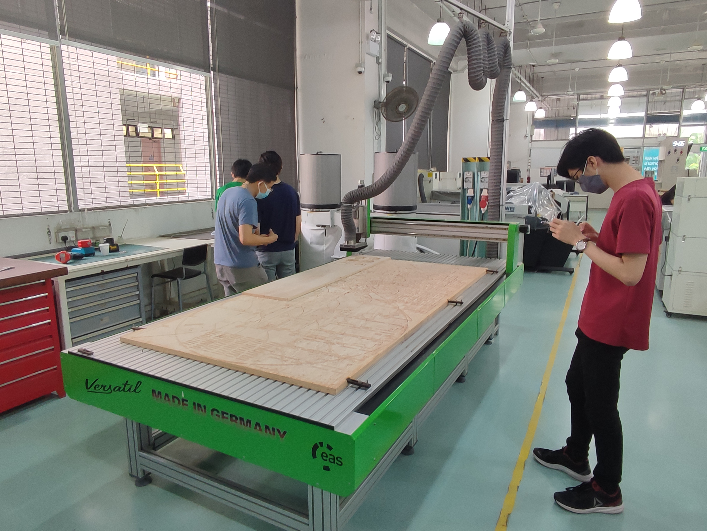It is a large format CNC mill that can machine up to 4' X 8'.

This is the main switch for the CNC machine. It must be turned on to use the CNC.

Plywood is screwed into the waste board.

This is the dust collector, CNC milling plywood creates a lot of dust.

The dust collector needs to be switched on form here.

This is the Z probe.

Below is the Z probing cycle.
The CNC is now cutting.

This video shows the machining process.
The coaster is finished.

The parts are chiselled out.

This is the finished coaster, the cut surfaces are rough.

The sides are rough with a lot of blow out.
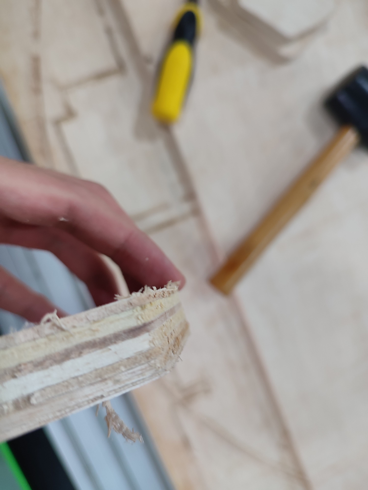The internal surfaces are rough.

This is a close up on the pocket.

This is what happens when a cut is started with the Z probe sensor under the spindle.
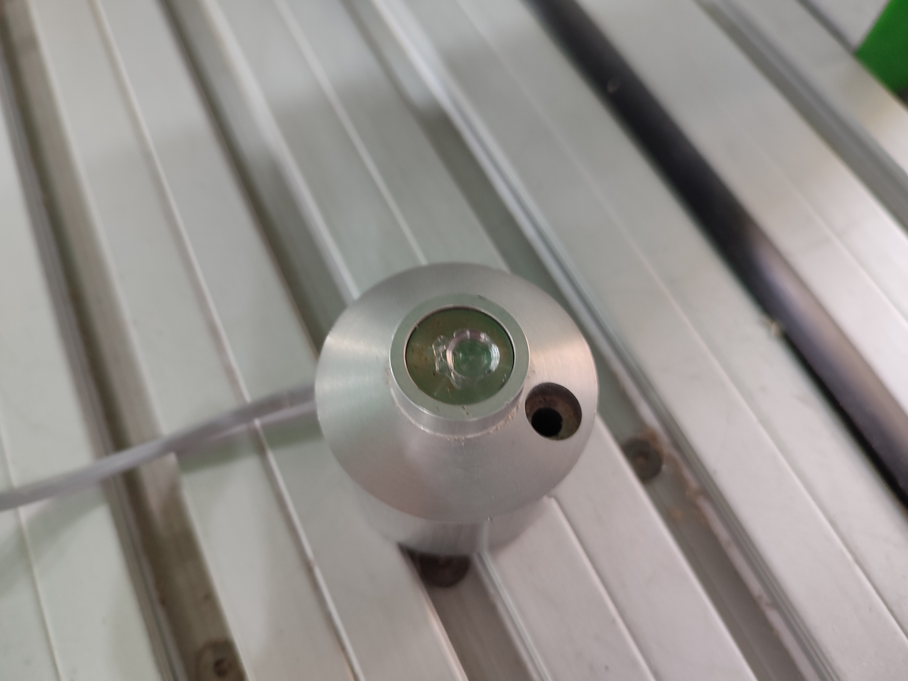CAD design
This is what the final design will look like.
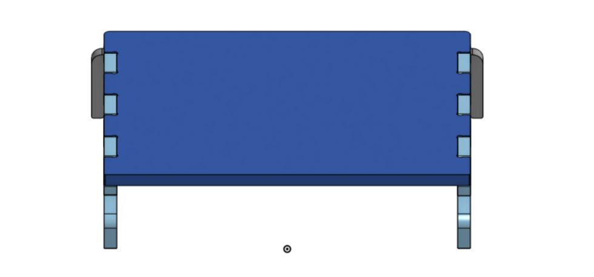This is the sketch for the side. Slots are cut-out for finger joints and the back piece.
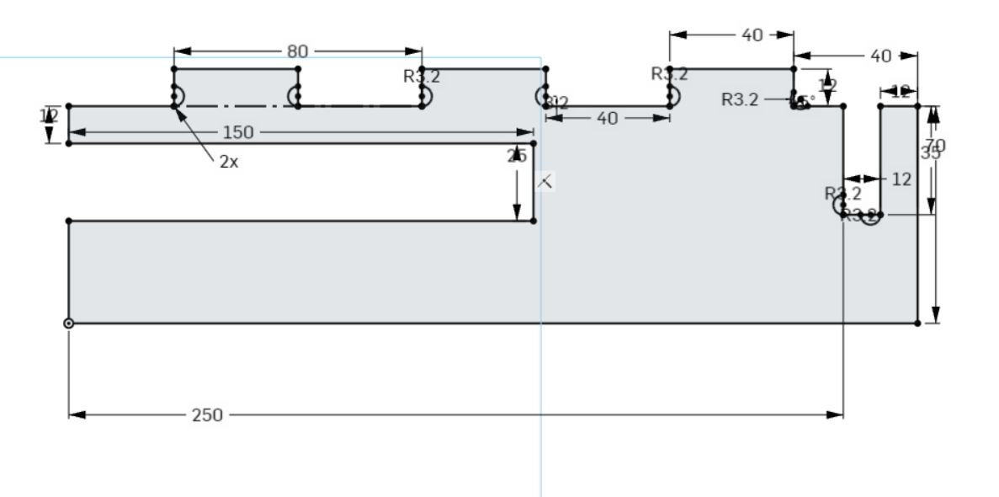The side piece is extruded.
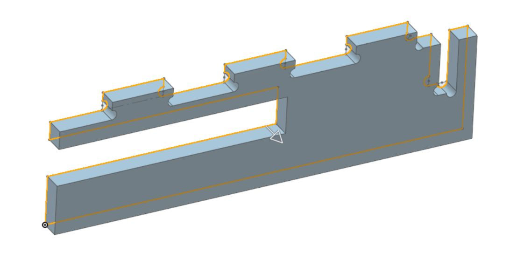The piece is moved with transform.
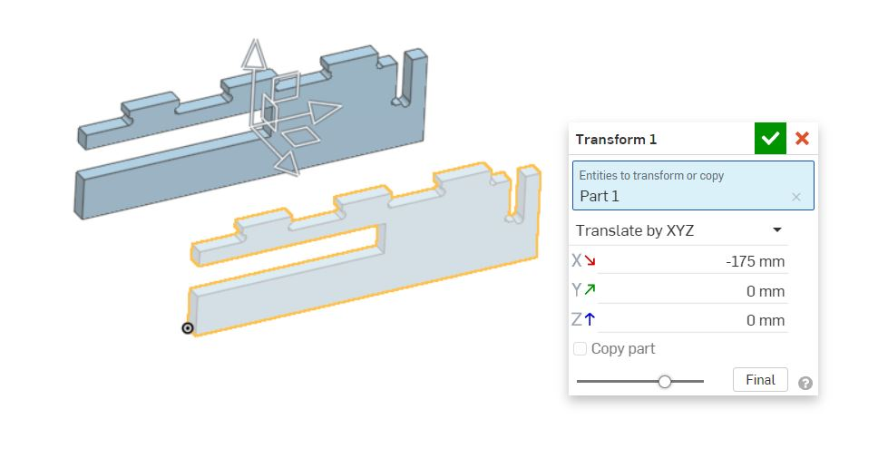It is mirrored to form the other side.
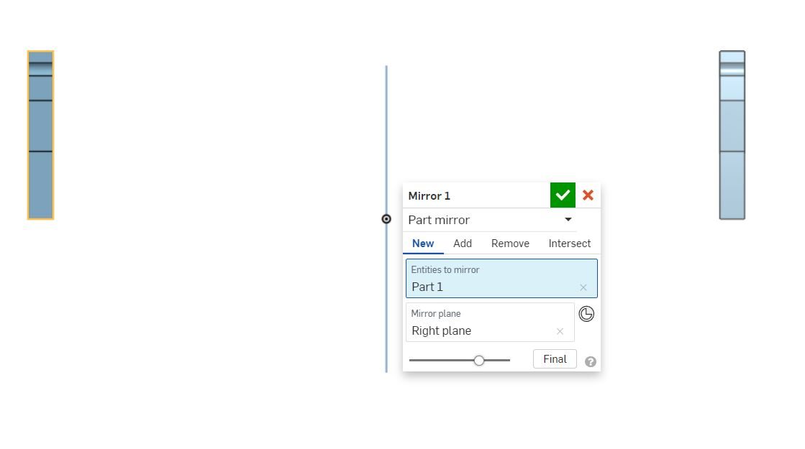The back piece is sketched, the slot is also drawn and relief cuts, dog-bones, are sketched.
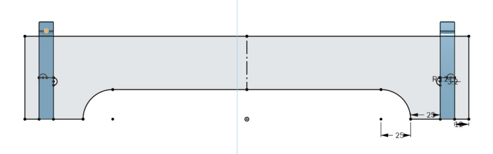The back piece is extruded.
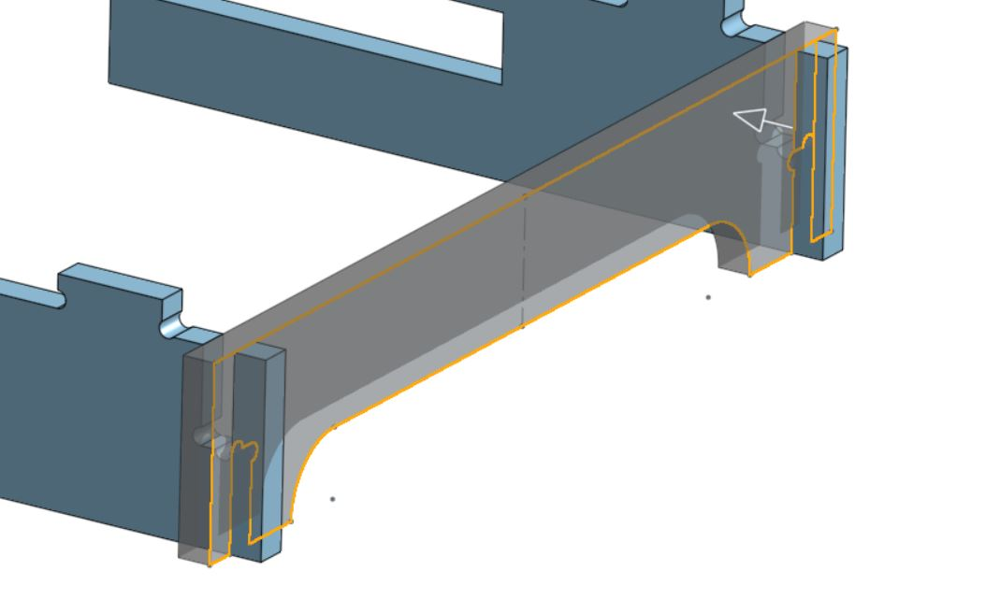The top is sketched with finger joints to mate with the other piece.
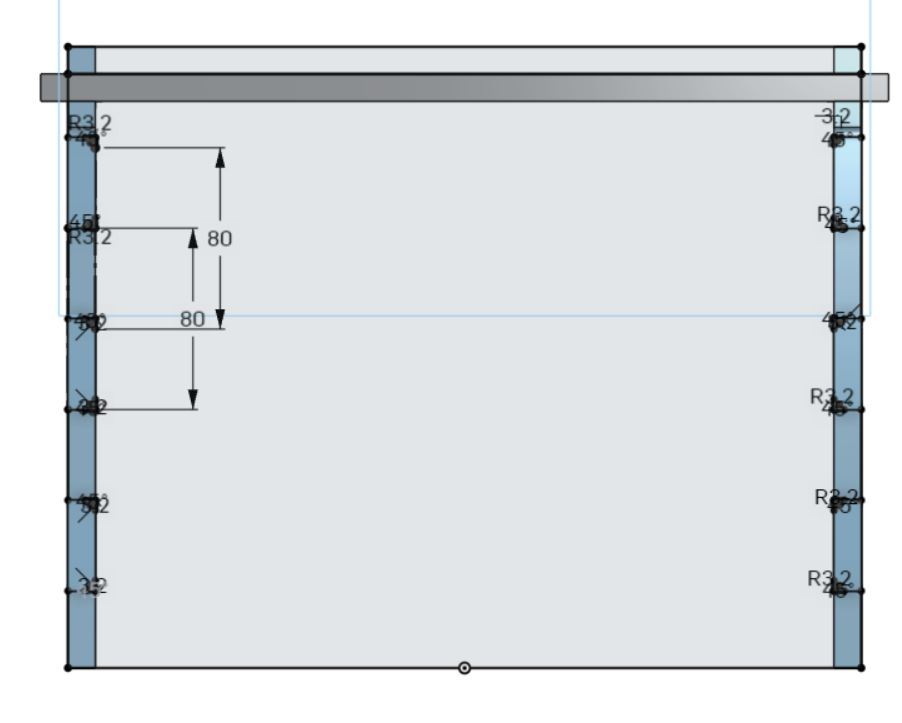The top is extruded.
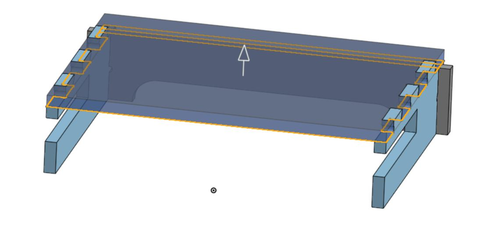Fillets are added to smooth out corners.
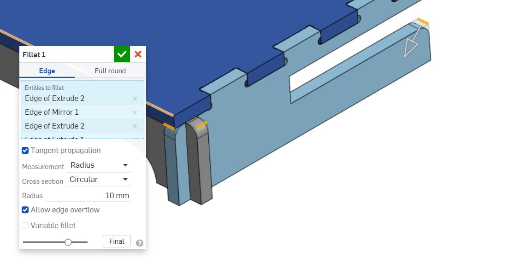Chamfers are added so that lining up the pieces are easier.
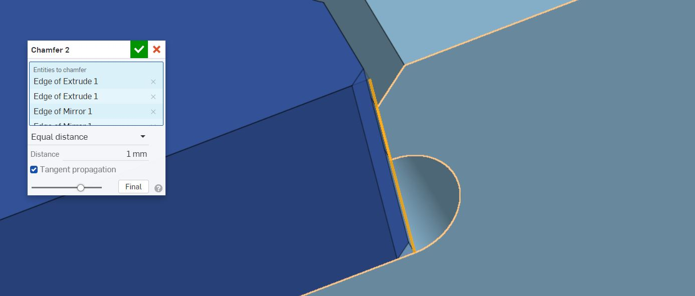The design is completed.
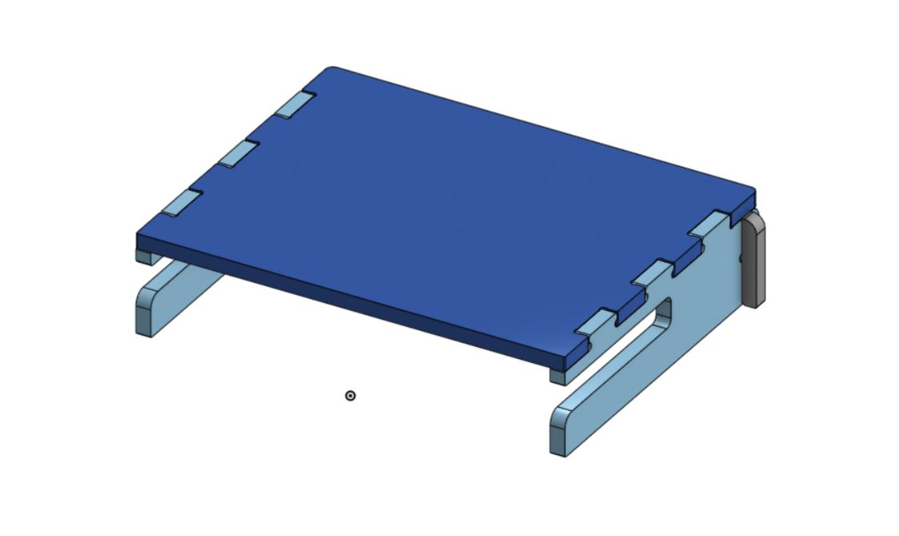 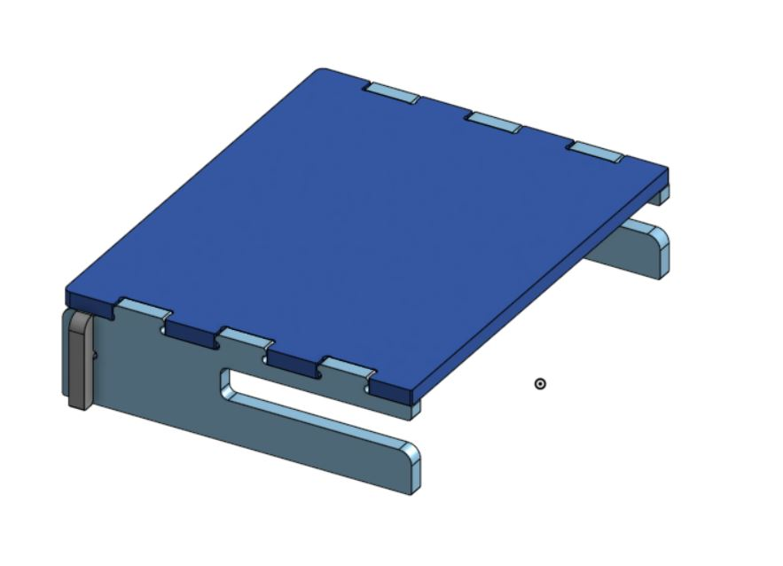This is the layout for cutting.
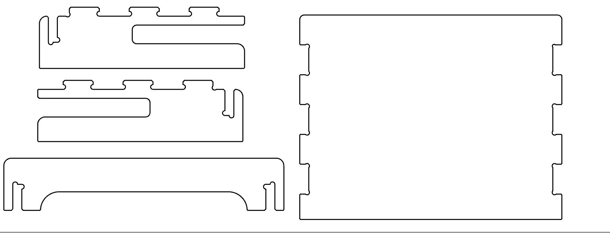